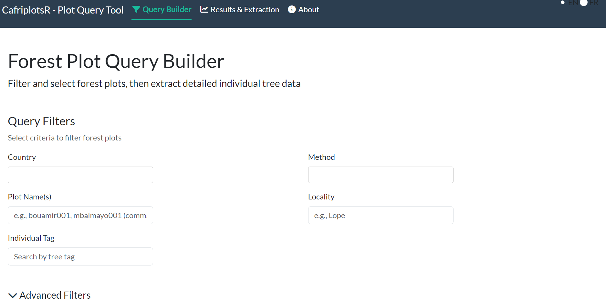
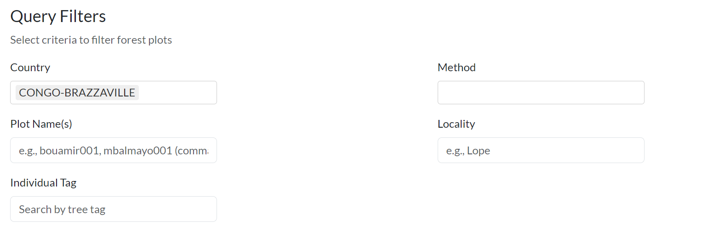
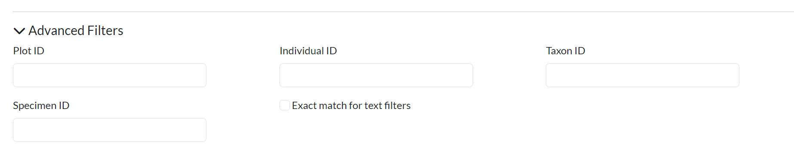
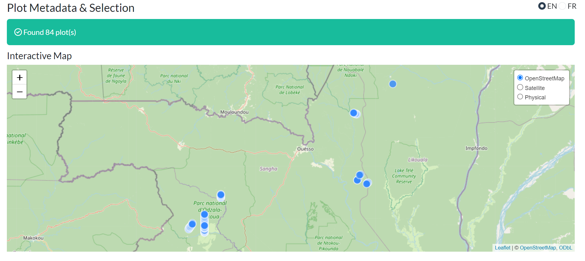
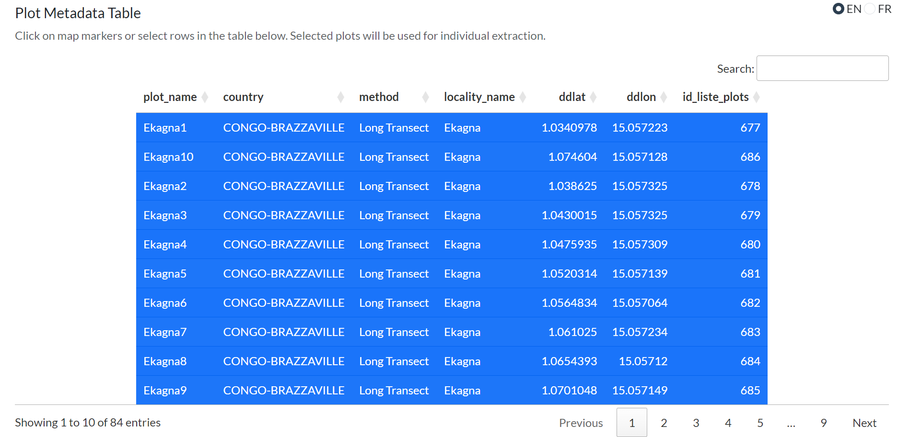

Using query_plots() to Access Plot Data
using-query-plots.RmdIntroduction
The query_plots() function is the primary entry point
for accessing forest plot data from the Central African plot database.
This vignette demonstrates how to use the function’s various features,
including the new output styles system introduced in
version 1.5.
Database Connection
Before querying data, establish connections to both databases:
# Connect to the main database
mydb <- call.mydb()
# Connect to the taxa database
mydb_taxa <- call.mydb.taxa()The package will prompt for credentials interactively, or you can use
environment variables via use_env_credentials = TRUE.
Basic Usage
Query Plot Metadata Only
To retrieve only plot-level information without individual tree data:
# Query by plot name
plots <- query_plots(
plot_name = "mbalmayo001",
extract_individuals = FALSE
)
# View the structure
plots
#>
#> ── Query Results ───────────────────────────────────────────────────────────────
#> Output style: permanent_plot - Organized output for permanent plot monitoring
#> (single or most recent census)
#>
#> ── $metadata ──
#>
#> 1 rows × 9 columns
#> Columns: plot_name, country, locality_name, method, latitude, longitude,
#> elevation, data_provider, ...
#>
#> Access tables with: $metadata, $individuals, etc.
#> Use names(result) to see all available tablesQuery Plots with Individual Trees
To include individual tree/stem measurements:
plots_with_trees <- query_plots(
plot_name = "mbalmayo001",
extract_individuals = TRUE
)
# The result is a structured list
plots_with_trees
#>
#> ── Query Results ───────────────────────────────────────────────────────────────
#> Output style: permanent_plot - Organized output for permanent plot monitoring
#> (single or most recent census)
#>
#> ── $metadata ──
#>
#> 1 rows × 9 columns
#> Columns: plot_name, country, locality_name, method, latitude, longitude,
#> elevation, data_provider, ...
#>
#> ── $individuals ──
#>
#> 456 rows × 16 columns
#> Columns: id_n, plot_name, tag, family, genus, species, dbh, quadrat, ...
#>
#> Access tables with: $metadata, $individuals, etc.
#> Use names(result) to see all available tablesOutput Styles System (v1.5+)
Starting in version 1.5, query_plots() returns
structured lists instead of flat data frames. The
structure adapts automatically based on the inventory method.
Available Output Styles
-
minimal: Essential plot metadata only, no features or traits -
standard: Standard analysis output with common features (default for unknown methods) -
permanent_plot: Organized tables for permanent plot monitoring (single census) -
permanent_plot_multi_census: Multi-census data with _census_N columns -
transect: Simplified output for transect/walk surveys -
full: Complete export with all columns (preserves v1.4 behavior)
Auto-Detection Based on Method
The output style is automatically detected from the plot’s
method field:
# For a permanent plot (method = "1 ha plot")
perm_plot <- query_plots(
plot_name = "mbalmayo",
extract_individuals = TRUE
)
# Automatically uses 'permanent_plot' style
# Returns: $metadata, $individuals, $censuses, $height_diameter
names(perm_plot)Manual Style Selection
Override automatic detection by specifying
output_style:
# Force minimal output
minimal_output <- query_plots(
plot_name = "mbalmayo",
extract_individuals = TRUE,
output_style = "minimal"
)
# Force full output (v1.4 behavior - flat data frame)
full_output <- query_plots(
plot_name = "mbalmayo",
extract_individuals = TRUE,
output_style = "full"
)Understanding the Structured Output
For permanent plots with extract_individuals = TRUE:
result <- query_plots(
plot_name = "mbalmayo001",
extract_individuals = TRUE
)
# Metadata table: plot-level information
result$metadata
# plot_id | plot_name | country | latitude | longitude | elevation | ...
# Individuals table: tree measurements
result$individuals
# id_n | plot_name | tag | family | genus | species | dbh | height | ...
# Censuses table: census information
result$censuses
# plot_name | census_number | census_date | team_leader | ...
# Height-diameter pairs: for allometric analysis
result$height_diameter
# id_n | plot_name | tag | D | H | POM | census
# Spatial data (if show_all_coordinates = TRUE)
result$coordinates_sfFiltering Options
By Location
# By country
cameroon_plots <- query_plots(
country = "Cameroon",
extract_individuals = FALSE
)
# By locality
dja_plots <- query_plots(
locality_name = "Dja",
extract_individuals = FALSE
)By Method
# Get all permanent plots
permanent_plots <- query_plots(
method = "1 ha plot",
extract_individuals = FALSE
)
# Get all transects
transects <- query_plots(
method = "Long Transect",
extract_individuals = FALSE
)By Plot ID
# Query specific plot IDs
plots_by_id <- query_plots(
id_plot = c(1, 2, 3),
extract_individuals = TRUE
)Working with Individual Tree Data
Basic Tree Extraction
trees <- query_plots(
plot_name = "mbalmayo001",
extract_individuals = TRUE
)
# Access individual tree data
trees$individualsHandling Multiple Censuses
Show Multiple Census Data
By default, only the most recent census is returned. To see all censuses:
multi_census <- query_plots(
plot_name = "mbalmayo",
extract_individuals = TRUE,
show_multiple_census = TRUE
)
# Automatically uses 'permanent_plot_multi_census' style
# Census-specific columns: dbh_census_1, dbh_census_2, height_census_1, ...
head(multi_census$individuals)
# Censuses table shows all census dates
multi_census$censuses
# Height-diameter table has one row per measurement
multi_census$height_diameterColumn Renaming
The output styles automatically rename database columns to user-friendly names:
result <- query_plots(
plot_name = "mbalmayo001",
extract_individuals = TRUE
)
# Database names → User-friendly names
# ddlat → latitude
# ddlon → longitude
# tax_fam → family
# tax_gen → genus
# tax_sp_level → species
# stem_diameter → dbh
# tree_height → height
names(result$metadata)
names(result$individuals)Spatial Data
Plot Coordinates
By default, returns one coordinate per plot:
plots <- query_plots(
country = "Gabon",
extract_individuals = FALSE
)
plots$metadata[, c("plot_name", "latitude", "longitude")]All Coordinates
Some plots have multiple coordinate points (corners, subplot centers):
plots_all_coords <- query_plots(
plot_name = "mbalmayo",
extract_individuals = FALSE,
show_all_coordinates = TRUE
)
# Returns sf object with all coordinate points
plots_all_coords$coordinates_sfInteractive Map
Visualize plot locations:
query_plots(
country = "Cameroon",
extract_individuals = FALSE,
map = TRUE
)Advanced Options
Keeping Database IDs
By default, internal IDs are removed. To keep them:
with_ids <- query_plots(
plot_name = "mbalmayo001",
extract_individuals = TRUE,
remove_ids = FALSE, output_style = "full"
)
# Now includes id_liste_plots, id_census, etc.
names(with_ids$extract)Filtering by Individual ID
Extract specific individuals:
specific_trees <- query_plots(
id_individual = c(1001, 1002, 1003),
extract_individuals = TRUE
)Filtering by Taxon
Extract individuals of specific taxa:
species_trees <- query_plots(
plot_name = "mbalmayo001",
id_tax = c(115), # Taxon IDs
extract_individuals = TRUE
)Custom Output Styles
The keep_patterns and remove_patterns
options in style configurations allow customization (NOY YET
IMPLEMENTED):
# In your custom style configuration:
# keep_patterns = c("^feat_wood", "^trait_leaf")
# This keeps wood features and leaf traits while removing othersCombining Options
Complex queries combining multiple filters:
complex_result <- query_plots(
country = "Cameroon",
locality_name = "Dja",
method = "1 ha plot",
extract_individuals = TRUE,
extract_traits = TRUE,
extract_individual_features = TRUE,
show_multiple_census = TRUE,
show_all_coordinates = TRUE,
remove_ids = FALSE,
output_style = "permanent_plot_multi_census"
)
# Returns comprehensive structured output
names(complex_result)Performance Tips
-
Start with metadata only: Use
extract_individuals = FALSEwhen exploring - Use specific filters: Reduce query time by filtering by plot_name or id_plot
-
Limit traits: Only use
extract_traits = TRUEwhen needed -
Choose appropriate style: Use
minimalorstandardfor quick analyses
Troubleshooting
Empty Results
If your query returns no data:
# Check connection status
print_connection_status()
# Run diagnostic
db_diagnostic()
# Verify plot access (row-level security)
# You can only access plots you have permission forSwitching Back to v1.4 Behavior
If you need the old flat data frame output:
flat_output <- query_plots(
plot_name = "mbalmayo001",
extract_individuals = TRUE,
output_style = "full"
)
# Returns a single data frame instead of structured listInteractive Shiny Application
CafriplotsR provides an interactive Shiny application for users who
prefer a graphical interface over writing R code. The app wraps
query_plots() with an intuitive two-stage workflow.
Launching the App
# Launch the interactive query app
launch_query_plots_app()
# Or specify language (French or English)
launch_query_plots_app(language = "fr") # French (default)
launch_query_plots_app(language = "en") # EnglishApp Overview
When you first launch the app, you’ll see the main interface with a navigation bar containing three tabs:

The app uses a tabbed workflow:
- Query Builder - Define filters and search criteria
- Results & Extraction - View results, select plots, extract individuals
- About - App documentation and package information
Phase 1: Query Builder
Setting Up Filters
The Query Builder tab provides various filtering options to find plots of interest:

Basic Filters:
- Country: Multi-select dropdown of available countries
- Method: Filter by inventory method (1 ha plot, Long Transect, etc.)
- Plot Name(s): Text search (comma-separated for multiple plots)
- Locality: Search by locality name
- Individual Tag: Search by tree tag number
Advanced Filters
Click on “Advanced Filters” to expand additional search options:

- Plot ID: Search by database plot ID
- Individual ID: Search by specific individual ID
- Taxon ID: Filter by taxonomic ID
- Specimen ID: Search by herbarium specimen ID
- Exact match: Toggle for strict text matching
Phase 2: Results & Extraction
Interactive Map
Query results are displayed on an interactive map with multiple basemap options:

Map features:
- Basemap layers: OpenStreetMap, Satellite, Physical
- Clickable markers: Click to see plot details
- Popup information: Plot name, country, method, area
Metadata Table
Below the map, a sortable and searchable table displays all plot metadata:

Table features:
- Search: Filter table contents
- Sort: Click column headers to sort
- Pagination: Navigate through large result sets
- Row selection: Click rows to select/deselect plots
Phase 3: Configure Extraction
Output Style
Choose how the extracted data should be formatted:

Available styles:
| Style | Description |
|---|---|
| Auto-detect | Automatically selects based on plot method |
| Minimal | Essential columns only (plot, tag, species, dbh) |
| Standard | Common columns for general ecological analysis |
| Permanent Plot | Single census format for permanent plot monitoring |
| Permanent Plot (multi-census) | Preserves all census columns |
| Transect | Simplified format for walk surveys |
| Full | Complete dataset with all columns |
Census Handling
Configure how multiple censuses should be handled:

- Census Strategy: Last census, First census, or Mean across censuses
- Show multiple census data: Creates separate columns for each census (e.g., dbh_census_1, dbh_census_2)
Data Organization
Control output structure:
- Concatenate multiple stems: Combine data from multi-stemmed trees
- Remove database IDs: Hide internal ID columns for cleaner output
- Remove observations with issues: Exclude flagged problematic records
- Include issue flags: Add quality flag columns to output
Additional Data
Select what extra information to include:

- Extract taxonomic traits: Wood density, growth form, etc.
- Extract individual-level features: Tree-specific measurements
- Extract subplot-level features: Subplot characteristics
- Fallback to genus-level traits: Use genus data when species unavailable
Phase 4: Extract and Download
Extraction Results
Click “Extract Individuals from Selected Plots” to retrieve detailed tree data:

Results are organized in tabs:
- Individuals: Tree-level measurements
- Metadata: Plot information
- Censuses: Census dates and details (if applicable)
- Height-Diameter: H-D pairs for allometry (if applicable)
Download Options
Export your data in multiple formats:

Available formats:
- Excel (.xlsx): Multi-sheet workbook
- CSV (zipped): Separate CSV files in a ZIP archive
- R Object (.rds): Native R format preserving data types
- Shapefile (.zip): Spatial data (if coordinates available)
Select which tables to include in your export using the checkboxes.
Viewing the Equivalent R Code
A key feature of the app is the “Equivalent R Code” panel, displayed after running queries:

This shows the exact R code you would use with
query_plots() to reproduce the same results
programmatically.
Code sections:
- Metadata Query: Code to retrieve plot metadata with your filters
- Individual Extraction: Code to extract tree data with your options
- Complete Workflow Script: Full script combining both steps

Why this matters:
- Learning: Understand how app options map to function parameters
- Reproducibility: Save the exact code for your analysis documentation
- Scripting: Copy code for automated workflows
- Collaboration: Share query parameters with colleagues
Click “Copy to clipboard” to copy any code section.
App vs. Function: When to Use Each
| Use Case | Recommendation |
|---|---|
| Quick data exploration | Use the app |
| Interactive plot selection on a map | Use the app |
| Learning function parameters | Start with the app, copy generated code |
| Reproducible analysis scripts | Use query_plots()
|
| Automated data pipelines | Use query_plots()
|
| Processing many queries | Use query_plots()
|
Language Selection
The app supports bilingual operation (French and English). French is the default language.
A language toggle is located in the top-right corner:
- Click “FR” for French interface
- Click “EN” for English interface
The switch is instant and affects all UI elements.
Example: From App to Script
Here’s how the app helps you build reproducible queries:
In the app: Select Cameroon, filter by “1 ha plot” method, extract with traits
Copy the generated code:
# Query plot metadata
metadata <- query_plots(
country = c("Cameroon"),
method = c("1 ha plot"),
extract_individuals = FALSE
)
# Extract individual tree data from selected plots
individuals <- query_plots(
id_plot = c(1, 5, 12),
extract_individuals = TRUE,
output_style = "permanent_plot",
extract_traits = TRUE,
extract_individual_features = TRUE
)- Use in your analysis script for reproducible research